目次
MagicDrive: Street View Generation with Diverse 3D Geometry Control
Ruiyuan Gao1*、Kai Chen2*、Enze Xie3†、Lanqing Hong3、Zhenguo Li3、Dit-Yan Yeung2、Qiang Xu1†
1The Chinese University of Hong Kong 2Hong Kong University of Science and Technology 3Huawei Noah's Ark Lab
{rygao,qxu}@cse.cuhk.edu.hk, kai.chen@connect.ust.hk, {xie.enze,honglanqing,li.zhenguo}@huawei.com, dyyeung@cse.ust.hk
ICLR 2024 会議論文、arXiv:2310.02601v7 [cs.CV]、2024年5月3日
翻訳について：原文 PDF は
38_MagicDrive_2310.02601.pdf（全 20 ページ）。本文、図の説明、図中ラベル、表、脚注、付録を訳出し、論文タイトルと参考文献は原文のまま掲載。図は原図を掲載し、英語ラベルの日本語訳を併記した。数式・数値・引用番号・コードの識別子は原文を維持。原文の記述に関する補足は「訳注」と明示し、本文と区別している。
脚注：* 同等の貢献。† 責任著者。プロジェクトページ：https://flymin.github.io/magicdrive
要旨
拡散モデルの近年の進歩により、2D 制御によるデータ合成は大きく向上した。しかし、3D 知覚タスクにとって不可欠な、街路画像（street view）生成における精密な 3D 制御はいまだ実現されていない。具体的には、鳥瞰図（Bird's-Eye View、BEV）を主たる条件として用いると、幾何的な制御（例えば高さ）に課題が生じることが多く、物体の形状、遮蔽のパターン、路面の高低の表現に影響を及ぼす。これらはいずれも知覚データの合成、とりわけ 3D 物体検出タスクにとって不可欠である。本論文では、新しい街路画像生成フレームワークである MagicDrive を提案する。MagicDrive は、専用に設計した符号化戦略により、カメラ姿勢、道路地図、3D バウンディングボックスといった多様な 3D 幾何制御を、テキストによる記述とともに提供する。さらに本設計はビュー間注意（cross-view attention）モジュールを組み込んでおり、複数のカメラビュー間の一貫性を保証する。MagicDrive により、微妙な 3D 幾何構造とさまざまなシーン記述を捉えた高忠実度の街路画像・動画の合成を実現し、BEV セグメンテーションや 3D 物体検出といったタスクを向上させる。
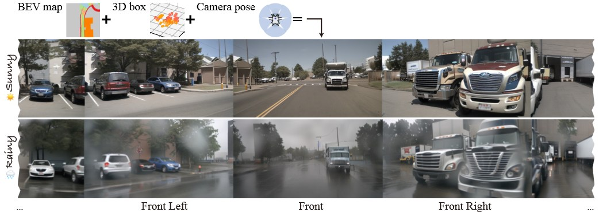
図1：MagicDrive によるマルチカメラ街路画像生成。MagicDrive は、道路地図、物体ボックス、テキスト（例えば天候）による制御のもとで、連続したカメラビューを生成できる。
図中ラベル：BEV map＝BEV 地図、3D box＝3D ボックス、Camera pose＝カメラ姿勢、Sunny＝晴れ、Rainy＝雨、Front Left＝左前方、Front＝前方、Front Right＝右前方
1 はじめに
データ収集とアノテーションに伴う高いコストは、深層学習モデルの効果的な学習を妨げることが多い。幸いなことに、最先端の生成モデルは、合成データが物体検出（Chen et al., 2023c）やセマンティックセグメンテーション（Wu et al., 2023b）といったさまざまなタスクの性能を顕著に向上させうることを示してきた。しかし、主流の手法の多くは 2D の文脈に合わせて作られており、主に 2D バウンディングボックス（Lin et al., 2014; Han et al., 2021）やセグメンテーションマップ（Zhou et al., 2019）をレイアウト条件として用いている（Chen et al., 2023c; Li et al., 2023b）。
自動運転の応用では、3D 環境を十分に把握することが不可欠である。そのためには、鳥瞰図（BEV）地図セグメンテーション（Zhou & Krähenbühl, 2022; Ji et al., 2023）や 3D 物体検出（Chen et al., 2020; Huang et al., 2021; Liu et al., 2023a; Ge et al., 2023）といったタスクのための信頼できる技術が求められる。図2に示すように、路面の高低、物体の高さ、およびそれらの遮蔽パターンといった 3D アノテーションの精緻な詳細を捉えるには、真の 3D 幾何表現が極めて重要である。したがって、3D アノテーションに従ってマルチカメラの街路画像を生成することは、下流の知覚タスクを向上させるうえで不可欠となる。
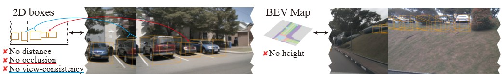
図2：3D バウンディングボックスは街路画像の合成にとって極めて重要である。2 つの例は、2D ボックスや BEV 地図では距離、高さ、高低差が失われることを示している。画像は MagicDrive により生成したものである。（a）3D バウンディングボックスは位置関係を示す。（b）3D バウンディングボックスに導かれた路面の高低差。
図中ラベル：2D boxes＝2D ボックス、No distance＝距離なし、No occlusion＝遮蔽なし、No view-consistency＝ビュー間一貫性なし、BEV Map＝BEV 地図、No height＝高さなし
街路画像データの合成においては、リアリズムと制御性という 2 つの重要な基準がある。リアリズムとは、合成データの品質が実データの品質に揃っていること、そして所与のシーンにおいて異なるカメラ視点からのビューが互いに一貫していること（Mildenhall et al., 2020）を要求するものである。一方、制御性は、与えられた条件、すなわち BEV 地図、3D 物体バウンディングボックス、および各ビューのカメラ姿勢に忠実に従う街路画像を生成する精度を重視する。これらの中核的要件に加えて、効果的なデータ拡張には、その時点の天候条件や時間帯といった、より細かなシナリオ属性を調整できる柔軟性も求められる。BEVGen（Swerdlow et al., 2023）のような既存の解決策は、すべての意味情報を BEV 内にカプセル化することで街路画像生成に取り組んでいる。逆に BEVControl（Yang et al., 2023a）は、まず 3D 座標を画像ビューへ投影し、その後 2D の幾何的ガイダンスを用いる。しかし、いずれの手法も特定の幾何的次元を犠牲にしている。BEVGen では高さが、BEVControl では奥行きが失われる。
拡散モデルの台頭は、制御可能な画像生成の品質の限界を大きく押し広げた。具体的には、ControlNet（Zhang et al., 2023a）は、事前学習済みの Text-to-Image（T2I）拡散モデル（Rombach et al., 2022）に基づいて 2D の空間制御を組み込む柔軟なフレームワークを提案している。しかし、3D 条件はピクセルレベルの条件やテキストとは異なる。街路画像の合成において、それらをマルチカメラのビュー間一貫性とともにシームレスに統合するという課題は残されている。
本論文では、多様な 3D 幾何制御1による街路画像合成に特化した新しいフレームワークである MagicDrive を提案する。リアリズムのために、事前学習済みの Stable Diffusion（Rombach et al., 2022）の能力を活用し、さらに街路画像生成向けにファインチューニングする。本フレームワークの特徴的な構成要素の 1 つが、ビュー間注意モジュールである。この単純だが効果的な構成要素は、隣接するビュー間の相互作用を通じてマルチビューの一貫性をもたらす。従来手法とは対照的に、MagicDrive は 3D データによる制御性を向上させるため、物体と道路地図の符号化を分離した設計を提案する。より具体的には、3D バウンディングボックスが系列的で可変長であるという性質を踏まえ、その符号化にはテキスト埋め込みと同様にクロス注意を用いる。また、ControlNet（Zhang et al., 2023a）のような付加的（addictive）（訳注：原文 "addictive" は "additive" の誤植と思われる）エンコーダ分岐が BEV の地図を符号化でき、ビュー変換も可能であることを示す。したがって本設計は、明示的な幾何変換に頼ることも、マルチカメラの一貫性に幾何的制約を課すこともなく、幾何制御を実現する。最後に、MagicDrive はテキストによる記述も考慮に入れ、天候条件や時間帯といった属性制御を提供する。
脚注1：本論文における 3D 幾何制御は、道路地図、3D 物体ボックス、およびカメラ姿勢による制御を含む。物体の正確な形状や背景の内容といったその他の要素は考慮しない。
本 MagicDrive フレームワークは、その単純さにもかかわらず、道路地図、3D バウンディングボックス、さまざまなカメラ視点に整合した、驚くほどリアルな画像と動画の生成に優れている。さらに、生成された画像は 3D 物体検出と BEV セグメンテーションの両タスクの学習を向上させうる。加えて、MagicDrive はシーン、背景、前景の各レベルで包括的な幾何制御を提供する。この柔軟性により、シミュレーション目的に適した、これまでにない街路画像を作り出すことが可能になる。本研究の主な貢献を以下にまとめる。
- 自動運転向けに、BEV と 3D データを条件として多視点のカメラビューと動画を生成する革新的なフレームワーク MagicDrive の提案。
- 3D 幾何データを扱うための単純かつ強力な戦略を開発し、街路画像生成におけるマルチカメラのビュー間一貫性の課題に効果的に対処したこと。
- 厳密な実験を通じて、MagicDrive が従来の街路画像生成技術、とりわけ多次元の制御性において上回ることを示したこと。加えて、合成データが 3D 知覚タスクに大幅な改善をもたらすことを明らかにした。
2 関連研究
条件付き生成のための拡散モデル。拡散モデル（Ho et al., 2020; Song et al., 2020; Zheng et al., 2023）は、ガウスノイズ分布から画像分布への段階的なノイズ除去過程を学習することで画像を生成する。これらのモデルは、さまざまな形式の制御（Zhang et al., 2023a; Li et al., 2023b）や複数の条件（Liu et al., 2022a; Gao et al., 2023）を扱う適応性と能力により、テキストからの画像合成（Rombach et al., 2022; Nichol et al., 2022; Yang et al., 2023b）、インペインティング（Wang et al., 2023a）、指示に基づく画像編集（Zhang et al., 2023b; Brooks et al., 2023）など、多様なタスクで卓越した性能を示してきた。さらに、幾何アノテーションから合成したデータは、2D 物体検出（Chen et al., 2023c; Wu et al., 2023b）のような下流タスクを支援しうる。そこで本論文では、街路画像の生成と下流の 3D 知覚モデルへの貢献における T2I 拡散モデルの可能性を探る。
街路画像生成。数多くの街路画像生成モデルは、2D バウンディングボックス（Li et al., 2023b）やセマンティックセグメンテーション（Wang et al., 2022）といった 2D レイアウトを条件とする。これらの手法は画像のスケールに直接対応する 2D レイアウト情報を活用するが、3D 情報はこの性質を持たないため、こうした手法は 3D 情報を生成に活用するには不向きである。3D 幾何による街路画像合成については、BEVGen（Swerdlow et al., 2023）が最初に取り組んだ。BEVGen は道路と車両の両方の条件として BEV 地図を用いる。しかし、高さ情報が省かれているため、3D 物体検出への応用は限られる。BEVControl（Yang et al., 2023a）は、高さ持ち上げ（height-lifting）処理によって物体の高さの欠落を補っている。同様に、Wang et al.（2023b）も 3D ボックスをカメラビューへ投影して生成を導いている。しかし、3D から 2D への投影は、奥行きや遮蔽といった本質的な 3D 幾何情報の欠落をもたらす。本論文では、より繊細な制御のためにバウンディングボックスと道路地図を別々に符号化し、さらにシーン記述を統合することで、街路画像の生成に対する制御を強化することを提案する。
3D シーンのマルチカメラ画像生成は、本質的に視点間の一貫性を必要とする。いくつかの研究は、屋内シーンの文脈でこの問題に取り組んできた。例えば、MVDiffusion（Tang et al., 2023）はパノラマ画像とビュー間注意モジュールを用いて全体的な一貫性を維持し、Tseng et al.（2023）はエピポーラ幾何を制約となる事前知識として活用している。しかし、これらのアプローチは主に画像ビューの連続性に依存しており、この条件は、カメラ間の重なりが限られていることや、カメラ設定（例えば露出、内部パラメータ）が異なることから、街路画像では必ずしも満たされない。本 MagicDrive は UNet に追加のビュー間注意モジュールを導入し、マルチカメラビュー間の一貫性を大幅に高める。
3 準備
問題設定。本論文では、LiDAR システムの座標系を自車（ego car）の座標系とみなし、すべての幾何情報をそれに従ってパラメータ化する。\( \mathbf{S} = \{\mathbf{M}, \mathbf{B}, \mathbf{L}\} \) を自車周辺の走行シーンの記述とする。ここで \( \mathbf{M} \in \{0,1\}^{w \times h \times c} \) は、\( c \) 個のセマンティッククラスを持つ BEV 上の \( w \times h \) メートルの道路領域を表す二値地図、\( \mathbf{B} = \{(c_i, b_i)\}_{i=1}^{N} \) はシーン内の各物体の 3D バウンディングボックスの位置（\( b_i = \{(x_j, y_j, z_j)\}_{j=1}^{8} \in \mathbb{R}^{8 \times 3} \)）とクラス（\( c_i \in \mathcal{C} \)）を表し、\( \mathbf{L} \) はシーンに関する追加情報（例えば天候や時間帯）を記述するテキストである。カメラ姿勢 \( \mathbf{P} = [\mathbf{K}, \mathbf{R}, \mathbf{T}] \)（すなわち内部パラメータ、回転、並進）が与えられたとき、街路画像生成の目標は、シーン \( \mathbf{S} \) とカメラ姿勢 \( \mathbf{P} \) に対応するリアルな画像 \( I \in \mathbb{R}^{H \times W \times 3} \) を \( I = \mathcal{G}(\mathbf{S}, \mathbf{P}, z) \) として合成する生成器 \( \mathcal{G}(\cdot) \) を学習することである。ここで \( z \sim \mathcal{N}(0,1) \) はガウス分布からのランダムノイズである。
条件付き拡散モデル。拡散モデル（Ho et al., 2020; Song et al., 2020）は、ランダムなガウスノイズ（\( \boldsymbol{x}_T \)）を \( T \) ステップにわたって反復的にノイズ除去することでデータ（\( \boldsymbol{x}_0 \)）を生成する。一般に、ノイズ除去過程を学習するために、ネットワークは平均二乗誤差を最小化してノイズを予測するよう学習される。
\[ \ell_{simple} = \mathbb{E}_{\boldsymbol{x}_0, \boldsymbol{c}, \boldsymbol{\epsilon}, t} \left[ \| \boldsymbol{\epsilon} - \boldsymbol{\epsilon}_\theta(\sqrt{\bar{\alpha}_t}\boldsymbol{x}_0 + \sqrt{1-\bar{\alpha}_t}\boldsymbol{\epsilon}, t, \boldsymbol{c}) \|^2 \right], \tag{1} \]
ここで \( \boldsymbol{\epsilon}_\theta \) は学習対象のネットワークでパラメータは \( \theta \)、\( \boldsymbol{c} \) は条件付き生成に用いる任意の条件、\( t \in [0, T] \) は時間ステップ、\( \boldsymbol{\epsilon} \in \mathcal{N}(0, I) \) は加算されるガウスノイズ、\( \bar{\alpha}_t \) はスカラーパラメータである。潜在拡散モデル（LDM）（Rombach et al., 2022）は拡散モデルの特殊な一種であり、事前学習済みのベクトル量子化変分オートエンコーダ（VQ-VAE）（Esser et al., 2021）を用いて潜在空間で拡散過程を行う。VQ-VAE のエンコーダを \( z = \mathcal{E}(x) \) とすると、LDM では式1の \( \boldsymbol{\epsilon}_\theta(\cdot) \) を \( \boldsymbol{\epsilon}_\theta(\sqrt{\bar{\alpha}_t}\mathcal{E}(\boldsymbol{x}_0) + \sqrt{1-\bar{\alpha}_t}\boldsymbol{\epsilon}, t, \boldsymbol{c}) \) と書き換えられる。さらに、LDM は画像を記述するテキストを条件 \( c \) として扱う。
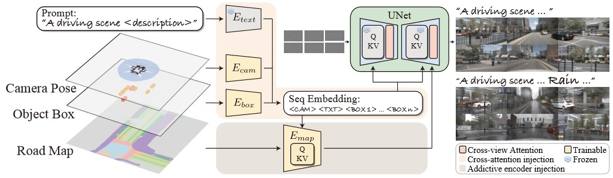
図3：街路画像生成のための MagicDrive の概要。MagicDrive は、道路地図、物体ボックス、カメラパラメータを独立に符号化して 3D アノテーションの幾何情報を活用し、精密で幾何に導かれた合成を行うことで、非常にリアルな画像を生成する。加えて、MagicDrive は記述的な条件（例えば天候）によるガイダンスにも対応する。
図中ラベル：Prompt: "A driving scene <description>"＝プロンプト：「走行シーン <記述>」、Camera Pose＝カメラ姿勢、Object Box＝物体ボックス、Road Map＝道路地図、Seq Embedding＝系列埋め込み、"A driving scene ... Rain ..."＝「走行シーン……雨……」、Cross-view Attention＝ビュー間注意、Cross-attention injection＝クロス注意による注入、Addictive encoder injection＝付加的エンコーダによる注入（訳注："Addictive" は "Additive" の誤植と思われる）、Trainable＝学習対象、Frozen＝凍結
4 3D 情報を用いた街路画像生成
MagicDrive の概要を図3に示す。MagicDrive は LDM のパイプライン上で動作し、シーンアノテーション（\( \mathbf{S} \)）と各ビューのカメラ姿勢（\( \mathbf{P} \)）の両方を条件として街路画像を生成する。シーンアノテーションに 3D 幾何情報が与えられたとき、BEVGen（Swerdlow et al., 2023）や BEVControl（Yang et al., 2023a）のようにすべてを BEV 地図へ投影しても、図2に例示したように、街路画像生成のための精密なガイダンスは保証されない。そこで MagicDrive は、条件をシーン（テキストとカメラ姿勢）、前景（3D バウンディングボックス）、背景（道路地図）の 3 つのレベルに分類し、4.1 節で詳述するように、それらをクロス注意と付加的エンコーダ分岐によって別々に統合する。加えて、街路画像の合成には異なるカメラ間の一貫性を保つことが極めて重要である。そこで 4.2 節では、単純だが効果的なビュー間注意モジュールを導入する。最後に 4.3 節では、さまざまな条件の統合における Classifier-Free Guidance（CFG）に重点を置いて、本研究の学習戦略を説明する。
4.1 幾何条件の符号化
図3に示すように、拡散モデルの UNet への情報注入には、クロス注意と付加的エンコーダ分岐という 2 つの戦略を用いる。注意機構（Vaswani et al., 2017）は系列データ向けに設計されているため、クロス注意はテキストトークンやバウンディングボックスのような可変長の入力を扱うのに適している。逆に、道路地図のようなグリッド状のデータに対しては、付加的エンコーダ分岐が情報注入に効果的である（Zhang et al., 2023a）。したがって、MagicDrive は条件ごとに異なる符号化モジュールを用いる。
シーンレベルの符号化は、カメラ姿勢 \( \mathbf{P} = \{\mathbf{K} \in \mathbb{R}^{3\times3}, \mathbf{R} \in \mathbb{R}^{3\times3}, \mathbf{T} \in \mathbb{R}^{3\times1}\} \) とテキスト系列 \( \mathbf{L} \) を含む。テキストについては、「A driving scene image at {location}. {description} 」というテンプレートでプロンプトを構成し、LDM（Rombach et al., 2022）と同様に、式2に示すように事前学習済みの CLIP テキストエンコーダ（\( E_{text} \)）を活用する。ここで \( L \) は \( \mathbf{L} \) のトークン長である。カメラ姿勢については、まず各パラメータを列方向に連結し、\( \bar{\mathbf{P}} = [\mathbf{K}, \mathbf{R}, \mathbf{T}]^T \in \mathbb{R}^{7\times3} \) を得る。\( \bar{\mathbf{P}} \) には sin/cos 関数による値と 3D オフセットが含まれるため、モデルがこれらの高周波の変動を効果的に解釈できるよう、各 3 次元ベクトルにフーリエ埋め込み（Mildenhall et al., 2020）を適用し、その後、式3のように多層パーセプトロン（MLP、\( E_{cam} \)）を用いてカメラ姿勢パラメータを埋め込む。一貫性を保つため、\( h^c \) の次元は \( h^t_i \) と同じに設定する。CLIP テキストエンコーダを通すことで、各テキスト埋め込み \( h^t_i \) はすでに位置情報を含んでいる（Radford et al., 2021）。そこで、カメラ姿勢埋め込み \( h^c \) をテキスト埋め込みの先頭に付加し、シーンレベル埋め込み \( \boldsymbol{h}^s = [h^c, \boldsymbol{h}^t] \) を得る。
\[ \boldsymbol{h}^t = [h^t_1 \dots h^t_L] = E_{text}(\mathbf{L}), \tag{2} \]
\[ h^c = E_{cam}(\mathrm{Fourier}(\bar{\mathbf{P}})) = E_{cam}(\mathrm{Fourier}([\mathbf{K}, \mathbf{R}, \mathbf{T}]^T)). \tag{3} \]
3D バウンディングボックスの符号化。各走行シーンはバウンディングボックスの数が可変であるため、シーンレベルの情報と同様にクロス注意機構を通じてそれらを注入する。具体的には、各ボックスを \( h^t \) と同じ次元を持つ隠れベクトル \( h^b \) に符号化する。各 3D バウンディングボックス \( (c_i, b_i) \) は、クラスラベル \( c_i \) とボックス位置 \( b_i \) の 2 種類の情報を含む。クラスラベルについては、Li et al.（2023b）と同様の方法を用い、クラス名（\( L_{c_i} \)）の埋め込みをプーリングしたものをラベル埋め込みとみなす。8 つの角点の座標で表されるボックス位置 \( b_i \in \mathbb{R}^{8\times3} \) については、式4のように各点にフーリエ埋め込みを適用し、MLP に通して符号化する。次に、式5のように MLP を用いてクラスと位置の両方の埋め込みを 1 つの隠れベクトルに圧縮する。各シーンのすべてのバウンディングボックスの最終的な隠れ状態は \( \boldsymbol{h}^b = [h^b_1 \dots h^b_N] \) と表される。ここで \( N \) はボックスの数である。
\[ e^b_c(i) = \mathrm{AvgPool}(E_{text}(L_{c_i})),\ e^b_p(i) = \mathrm{MLP}_p(\mathrm{Fourier}(b_i)), \tag{4} \]
\[ h^b_i = E_{box}(c_i, b_i) = \mathrm{MLP}_b(e^b_c(i), e^b_p(i)). \tag{5} \]
理想的には、モデルは学習を通じてバウンディングボックスとカメラ姿勢の間の幾何的関係を学習する。しかし、各ビューから見えるボックス数の分布はロングテールである。そこで、各ビュー（\( v_i \)）から見える物体をフィルタリングすること、すなわち式6の \( f_{viz} \) によって学習をブートストラップする。加えて、拡張として見えないボックスも追加する（詳細は 4.3 節）。
\[ \boldsymbol{h}^b_{v_i} = \{ h^b_i \in \boldsymbol{h}^b \mid f_{viz}(b_i, \mathbf{R}_{v_i}, \mathbf{T}_{v_i}) \gt 0 \}. \tag{6} \]
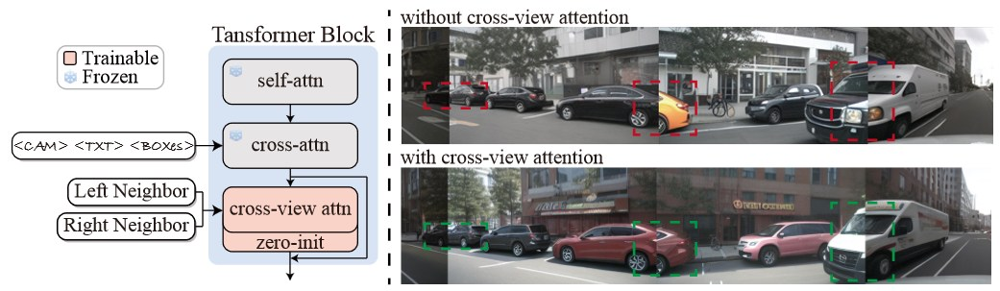
図4：ビュー間注意。左：事前学習済み UNet のクロス注意モジュールの後にビュー間注意を導入する。右：ビュー間注意なしとありの比較のため、いくつかの領域を強調表示している。ビュー間注意は複数ビュー間の一貫性を保証する。
図中ラベル：Tansformer Block＝Transformer ブロック（訳注：原図の "Tansformer" は "Transformer" の誤植）、Trainable＝学習対象、Frozen＝凍結、self-attn＝自己注意、cross-attn＝クロス注意、cross-view attn＝ビュー間注意、zero-init＝ゼロ初期化、Left Neighbor＝左隣、Right Neighbor＝右隣、without cross-view attention＝ビュー間注意なし、with cross-view attention＝ビュー間注意あり
道路地図の符号化。道路地図は 2D グリッド形式である。Zhang et al.（2023a）は付加的エンコーダがこの種のデータを 2D ガイダンスとして取り込めることを示しているが、道路地図の BEV とカメラの一人称視点（First-Person View、FPV）の間の本質的な視点の違いが食い違いを生む。BEVControl（Yang et al., 2023a）は BEV から FPV への変換に逆投影を用いるが、不良設定問題によって状況を複雑にしている。MagicDrive では、十分な 3D の手がかり（例えば物体ボックスからの高さとカメラ姿勢）があれば付加的エンコーダがビュー変換を達成できるため、明示的なビュー変換は不要であることを提案する。具体的には、シーンレベルの埋め込みと 3D バウンディングボックスの埋め込みを地図エンコーダに統合する（図3参照）。シーンレベルの埋め込みはカメラ姿勢を提供し、ボックス埋め込みは路面の高低の手がかりを提供する。さらに、テキスト記述を取り込むことで、さまざまな条件（例えば天候や時間帯）下での道路の生成が容易になる。このように、地図エンコーダは他の条件と相乗的に働いて生成を行える。
4.2 ビュー間注意モジュール
マルチカメラビューの生成では、異なる視点間で画像合成の一貫性が保たれることが極めて重要である。一貫性を保つため、ビュー間注意モジュールを導入する（図4）。走行環境ではカメラが疎に配置されていることを踏まえ、各ビュー間注意では、式7のように対象ビューがすぐ左右のビューの情報にアクセスできるようにする。ここで \( t \)、\( l \)、\( r \) はそれぞれ対象、左、右のビューである。次に、式8のように対象ビューはスキップ接続とともにこれらの情報を集約する。ここで \( \boldsymbol{h}^v \) は対象ビューの隠れ状態を表す。
\[ \mathrm{Attention}^i_{cv}(Q_t, K_i, V_i) = \mathrm{softmax}\left(\frac{Q_t K_i^T}{\sqrt{d}}\right) \cdot V_i,\ i \in \{l, r\}, \tag{7} \]
\[ \boldsymbol{h}^v_{out} = \boldsymbol{h}^v_{in} + \mathrm{Attention}^l_{cv} + \mathrm{Attention}^r_{cv}. \tag{8} \]
ビュー間注意は UNet 内のクロス注意モジュールの後に注入し、最適化をブートストラップするためにゼロ初期化（Zhang et al., 2023a）を適用する。ビュー間注意モジュールの有効性は、図4右、図5、図6で示される。UNet の多層構造により、いくつかのブロックを積み重ねた後には遠く離れたビューからの情報も集約できる。したがって、隣接ビューに対するビュー間注意を用いるだけでマルチビューの一貫性には十分であり、このことは付録 C のアブレーション研究でもさらに裏付けられる。
4.3 モデルの学習
Classifier-free Guidanceは、条件によるガイダンスの影響を強める（Ho & Salimans, 2021; Rombach et al., 2022）。効果的な CFG のためには、モデルは学習中にときどき条件を破棄する必要がある。各条件の固有の性質を考えると、複数の条件にドロップ戦略を適用するのは複雑である。そこで MagicDrive は、4 つの条件について、シーンレベルの条件（カメラ姿勢とテキスト埋め込み）を割合 \( \gamma^s \) で同時にドロップすることでこれを単純化する。符号化において null の意味表現（すなわち、ボックスではパディングトークン、地図では 0）を持つボックスと地図については、学習を通じて保持する。推論時には、すべての条件に null を用いることで、生成を導くための意味のある増幅を可能にする。
学習目的関数と拡張。すべての条件を入力として注入したうえで、3 節で述べた学習目的関数を式9のように複数条件の設定に適合させる。
\[ \ell = \mathbb{E}_{\boldsymbol{x}_0, \boldsymbol{\epsilon}, t, \{\boldsymbol{S}, \boldsymbol{P}\}} \left[ \| \boldsymbol{\epsilon} - \boldsymbol{\epsilon}_\theta(\sqrt{\bar{\alpha}_t}\mathcal{E}(\boldsymbol{x}_0) + \sqrt{1-\bar{\alpha}_t}\boldsymbol{\epsilon}, t, \{\mathbf{S}, \mathbf{P}\}) \| \right]. \tag{9} \]
さらに、MagicDrive の学習においては 2 つの重要な戦略を重視する。第一に、可視ボックスのフィルタリングを打ち消すため、拡張として見えないボックスを 10% ランダムに追加し、モデルの幾何変換能力を高める。第二に、複数ビュー間の情報共有を促進するビュー間注意を活用するため、各学習ステップで異なるビューに固有のノイズを適用し、式9に対する自明な解（例えば異なるビュー間で共有される成分を出力すること）を防ぐ。同一のランダムノイズは推論時にのみ用いる。
5 実験
5.1 実験設定
データセットとベースライン。MagicDrive の検証の場として、走行における BEV セグメンテーションと検出で広く用いられているデータセットである nuScenes データセット（Caesar et al., 2020）を用いる。公式の構成に従い、700 の街路シーンを学習に、150 を検証に用いる。ベースラインは、いずれも街路画像生成の最近の提案である BEVGen（Swerdlow et al., 2023）と BEVControl（Yang et al., 2023a）である。本手法は 10 の物体クラスと 8 の道路クラスを考慮しており、多様性の点でベースラインモデルを上回る。追加の詳細は付録 B に示す。
評価指標。街路画像生成のリアリズムと制御性の両方を評価する。リアリズムは主に、画像合成の品質を反映する Fréchet Inception Distance（FID）を用いて測定する。制御性については、BEV セグメンテーションと 3D 物体検出という 2 つの知覚タスクを通じて MagicDrive を評価し、知覚モデルとしてそれぞれ CVT（Zhou & Krähenbühl, 2022）と BEVFusion（Liu et al., 2023a）を用いる。いずれも各タスクにおける性能で知られている。まず、検証セットのアノテーションに整合した画像を生成し、実データで事前学習した知覚モデルを用いて画像品質と制御の精度を評価する。次に、学習セットに基づいてデータを生成し、データ拡張として知覚モデルの学習を支援できるかを調べる。
モデル設定。MagicDrive は Stable Diffusion v1.5 の事前学習済み重みを利用し、新たに追加したパラメータのみを学習する。Zhang et al.（2023a）に従い、\( E_{map} \) 用に学習可能な UNet エンコーダを作成する。ゼロ初期化モジュールとクラストークンを除き、新しいパラメータはランダムに初期化する。知覚タスクとベースラインの食い違いを調整するため、2 つの解像度を採用する。BEVGen に従い CVT モデルに対応する 224×400（0.25× ダウンサンプル）と、BEVFusion に対応するより高い 272×736（0.5× ダウンサンプル）である。特に断らない限り、画像は UniPC（Zhao et al., 2023）スケジューラを用い、CFG 2.0 で 20 ステップでサンプリングする。
5.2 主要な結果
リアリズムと制御性の検証。nuScenes 検証セットのアノテーションを用いて、リアルな街路画像を作成する MagicDrive の能力を評価する。表1に示すように、MagicDrive は画像品質において他手法を上回り、顕著に低い FID スコアを達成する。BEV セグメンテーションタスクで評価する制御性に関しては、車両生成の精度を高める独自の符号化設計により、MagicDrive は 224×400 の解像度でベースラインの結果と同等以上である。272×736 の解像度では、本符号化戦略の進歩が車両の mIoU 性能を向上させる。広い領域を切り取ることは CVT における道路の mIoU に悪影響を与える。しかし、本手法のバウンディングボックス符号化の有効性は、3D 物体検出における BEVFusion の結果によって裏付けられる。
| 手法 | 合成解像度 | FID↓ | BEV セグメンテーション | 3D 物体検出 | ||
|---|---|---|---|---|---|---|
| Road mIoU ↑ | Vehicle mIoU ↑ | mAP ↑ | NDS ↑ | |||
| Oracle | - | - | 72.21 | 33.66 | 35.54 | 41.21 |
| Oracle | 224×400 | - | 72.19 | 33.61 | 23.54 | 31.08 |
| BEVGen | 224×400 | 25.54 | 50.20 | 5.89 | - | - |
| BEVControl | - | 24.85 | 60.80 | 26.80 | - | - |
| MagicDrive | 224×400 | 16.20 | 61.05 | 27.01 | 12.30 | 23.32 |
| MagicDrive | 272×736 | 16.59 | 54.24 | 31.05 | 20.85 | 30.26 |
表1：走行ビュー生成手法との生成忠実度の比較。データ合成の条件は nuScenes 検証セットから取る。各タスクについて、nuScenes 学習セットで学習した対応するモデルでテストする。MagicDrive は評価全体を通じてすべてのベースラインを上回る。↑/↓ は値が高い／低いほど良いことを示す。最良の結果は太字、2 番目に良い結果は下線付きイタリックで示す（他の手法の結果がある場合）。
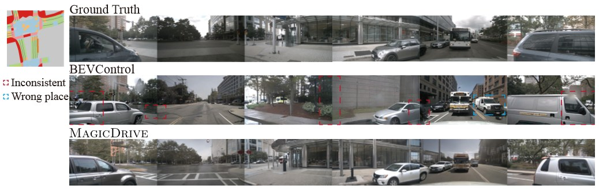
図5：nuScenes 検証セットの走行シーンにおける BEVControl との定性的比較。比較を容易にするため、いくつかの領域を矩形で強調している。BEVControl と比べて、MagicDrive の生成結果は背景と前景の両方でより一貫しているように見える。
図中ラベル：Ground Truth＝正解（実画像）、Inconsistent＝不整合、Wrong place＝誤った位置
BEV セグメンテーションと 3D 物体検出の学習支援。MagicDrive は正確なアノテーション制御を伴う拡張データを生成でき、知覚タスクの学習を向上させる。BEV セグメンテーションについては、ベースラインとの公平な比較のため、元のデータセットと同数の画像を拡張し、学習イテレーション数とバッチサイズを揃える。表3に示すように、MagicDrive は両設定で CVT を大幅に向上させ、車両セグメンテーションをわずかに改善するにとどまる BEVGen を上回る。3D 物体検出については、MagicDrive の合成データを拡張として用いて BEVFusion モデルを学習する。データ拡張を最適化するため、生成した各シーンのバウンディングボックスの 50% をランダムに除外する。表2は、カメラのみ（C）とカメラ＋LiDAR（C+L）の両設定において MagicDrive のデータが有益な影響を与えることを示している。重要な点として、カメラ＋LiDAR 設定では BEVFusion が両方のモダリティを物体検出に利用するため、LiDAR データを取り込む分だけより精密な画像生成が求められる。それにもかかわらず、MagicDrive の合成データは LiDAR 入力とシームレスに統合され、データの高い忠実度が際立つ。
5.3 定性的評価
ベースラインとの比較。同じ検証シーンについてマルチカメラビューを合成し、MagicDrive を 2 つのベースライン BEVGen および BEVControl と比較した（BEVGen との比較は付録 D）。図5は、MagicDrive が BEVControl よりも著しく高品質な画像を生成し、特に物体の正確な配置と、背景および物体に関する街路画像の一貫性の維持に優れていることを示している。この性能は主に、MagicDrive のバウンディングボックスエンコーダとビュー間注意モジュールに由来する。
多レベル制御。MagicDrive の設計は、分離した符号化を通じて街路画像生成に多レベルの制御を導入する。本節では、3 つの制御信号レベル、すなわちシーンレベル（時間帯と天候）、背景レベル（BEV 地図の変更と条件ビュー）、前景レベル（物体の向きと削除）を探索することで、MagicDrive の能力を示す。図1、図6、および付録 E に示すように、MagicDrive は各レベルの変更に巧みに対応し、マルチカメラの一貫性と高いリアリズムを保ったまま生成を行う。
| モダリティ | データ | mAP ↑ | NDS ↑ |
|---|---|---|---|
| C | 合成データなし（w/o synthetic data） | 32.88 | 37.81 |
| MagicDrive あり（w/ MagicDrive） | 35.40 +2.52 | 39.76 +1.95 | |
| C+L | 合成データなし（w/o synthetic data） | 65.40 | 69.59 |
| MagicDrive あり（w/ MagicDrive） | 67.86 +2.46 | 70.72 +1.13 |
表2：3D 物体検出モデル（すなわち BEVFusion）の支援に関する比較。MagicDrive は拡張用に 272×736 の画像を生成する。結果は nuScenes 検証セットで報告する。
| データ | Vehicle mIoU ↑ | Road mIoU ↑ |
|---|---|---|
| 合成データなし（w/o synthetic data） | 36.00 | 74.30 |
| BEVGen あり（w/ BEVGen） | 36.60 +0.60 | 71.90 -2.40 |
| MagicDrive あり（w/ MagicDrive） | 40.34 +4.34 | 79.56 +5.26 |
表3：BEV セグメンテーションモデル（すなわち CVT）の支援に関する比較。結果は nuScenes 検証セットでのテストにより報告する。
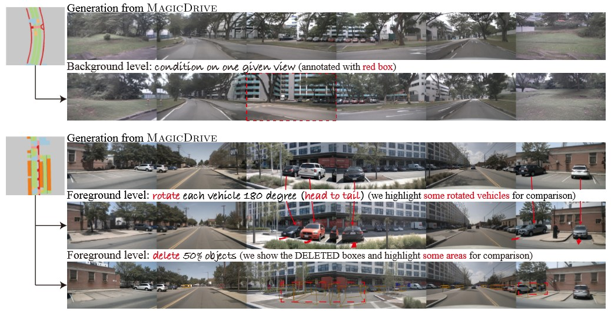
図6：MagicDrive による多レベル制御の事例。背景レベルと前景レベルの制御を、異なる条件で別々に示す。すべてのシーンは nuScenes 検証セットに基づく。さらなる結果は付録 E にある。
図中ラベル：Generation from MagicDrive＝MagicDrive による生成、Background level: condition on one given view (annotated with red box)＝背景レベル：与えられた 1 つのビューを条件とする（赤枠で注記）、Foreground level: rotate each vehicle 180 degree (head to tail) (we highlight some rotated vehicles for comparison)＝前景レベル：各車両を 180 度回転（前後反転）（比較のため回転した車両の一部を強調）、Foreground level: delete 50% objects (we show the DELETED boxes and highlight some areas for comparison)＝前景レベル：物体の 50% を削除（削除したボックスを表示し、比較のため一部の領域を強調）
5.4 動画生成への拡張
nuScenes の動画でファインチューニングすることで、MagicDrive の動画生成への拡張性を示す。これには、自己注意を ST-Attn（Wu et al., 2023a）に変更し、各 Transformer ブロックに時間注意モジュールを追加し（図7左）、最初と最後のフレームのみにバウンディングボックスがある 7 フレームのクリップでモデルを調整することが含まれる。UniPC（Zhao et al., 2023）サンプラーを用いて 20 ステップで、各フレームの初期ノイズを独立にサンプリングし、その一例を図7右に示す。
さらに、DriveDreamer（Wang et al., 2023b）のように ASAP（Wang et al., 2023c）による補間アノテーションを用いることで、MagicDrive は Nvidia V100 GPU で学習した 12Hz・16 フレームの動画生成へ拡張できる。さらなる結果（例えば動画の可視化）は我々のウェブサイトで閲覧できる。
6 アブレーション研究
バウンディングボックスの符号化。MagicDrive はバウンディングボックスと道路地図に別々のエンコーダを用いる。その有効性を示すため、道路と物体の両方の意味情報を持つ BEV 地図を条件とする ControlNet（Zhang et al., 2023a）を（BEVGen のように）学習し、表4で「w/o \( E_{box} \)」と表記する。BEV 地図における物体は比較的小さいため、車両 mIoU の性能差が示すように、正確な車両アノテーションには個別の \( E_{box} \) が必要である。可視物体フィルタ \( f_{viz} \) を適用すると、最適化の負担が減ることで道路と車両の両方の mIoU が大幅に向上する。道路と物体の意味情報を持つ BEV とともに \( E_{box} \) を組み込んだ MagicDrive の変種では性能が向上せず、多様な情報を異なる戦略で統合することの重要性が強調される。
Classifier-free Guidance の効果。最も重要な 2 つの条件、すなわち物体ボックスと道路地図に注目し、CFG が生成の性能にどう影響するかを分析する。CFG を 1.5 から 4.0 まで変化させ、CVT による検証結果の変化を図8にプロットする。第一に、CFG スケールを大きくすると、先行研究（Chen et al., 2023c）で見られるように、コントラストとシャープネスの顕著な変化により FID が悪化する。第二に、条件付き推論と無条件推論の両方で同じ地図を保持すると、地図条件に対する CFG の効果はなくなる。図8の青線に示すように、CFG スケールを大きくすると CFG=2.5 で車両 mIoU が最も高くなるが、道路 mIoU は低下し続ける。第三に、CFG の無条件推論に \( M = \{0\} \) を用いると、道路 mIoU は大幅に向上する。しかし、車両生成に対するガイダンスはわずかに低下する。4.3 節で述べたように、CFG の複雑さは条件が増えるほど増大する。学習は単純化したものの、推論時には CFG にさまざまな選択肢が存在する。この場合の詳細な調査は今後の課題とする。
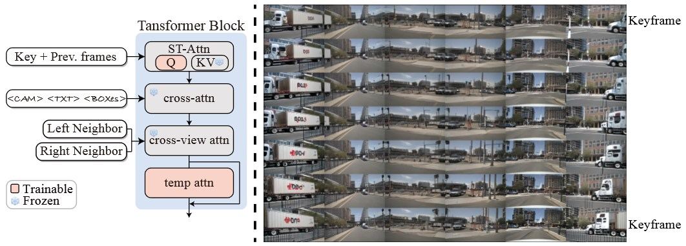
図7：MagicDrive の動画生成への拡張。左：動画生成のための Transformer ブロックの変更。右：動画生成の結果。キーフレームのみがバウンディングボックスによる制御を持つ。
図中ラベル：Tansformer Block＝Transformer ブロック（原図の綴りのまま）、Key + Prev. frames＝キーフレーム＋前フレーム、cross-attn＝クロス注意、cross-view attn＝ビュー間注意、temp attn＝時間注意、Left Neighbor＝左隣、Right Neighbor＝右隣、Trainable＝学習対象、Frozen＝凍結、Keyframe＝キーフレーム
| 手法 | FID ↓ | Road mIoU ↑ | Vehicle mIoU ↑ |
|---|---|---|---|
| w/o \( E_{box} \) | 18.06 | 58.31 | 5.50 |
| w/o \( f_{viz} \) | 14.67 | 56.46 | 24.73 |
| w/ \( E_{box} \) & \( \mathrm{map}_{obj} \) | 14.70 | 56.04 | 26.20 |
| Ours（本手法） | 14.46 | 59.31 | 27.13 |
表4：個別のボックスエンコーダのアブレーション。評価結果は、合成した nuScenes 検証セットに対する CVT によるもので、CFG スケール = 2 において \( M = \{0\} \) を用いない場合である。MagicDrive はより良い制御性を持ち、画像品質も維持する。
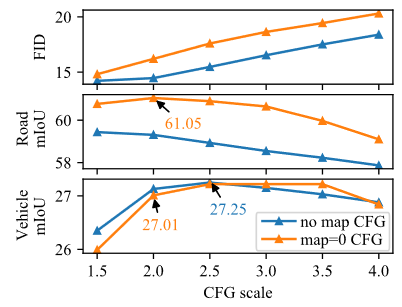
図8：異なる条件に対する CFG の各指標への効果。
図中ラベル：Road mIoU＝道路 mIoU、Vehicle mIoU＝車両 mIoU、CFG scale＝CFG スケール、no map CFG＝地図に CFG なし、map=0 CFG＝地図＝0 による CFG
7 結論
本論文では、高品質なマルチカメラ街路画像生成のために複数の幾何制御を符号化する新しいフレームワーク MagicDrive を提示した。分離した符号化設計により、MagicDrive は 3D アノテーションの幾何情報を十分に活用し、街路画像に対する正確な意味的制御を実現する。さらに、提案したビュー間注意モジュールは単純でありながら、マルチカメラビュー間の一貫性の保証に効果的である。実験で示されたように、MagicDrive による生成結果は高いリアリズムと 3D アノテーションへの忠実性を示す。複数の制御により、MagicDrive は新しい街路画像の生成に対する汎化性が向上している。また、MagicDrive はデータ拡張に用いることができ、BEV セグメンテーションと 3D 物体検出の両タスクにおける知覚モデルの学習を促進する。
限界と今後の課題。図9に MagicDrive の失敗例を示す。MagicDrive は夜間のビューを生成できるものの、実画像ほど暗くはならない（図9a）。これは、拡散モデルが暗すぎる画像を生成しにくいこと（Guttenberg, 2023）によるものかもしれない。図9b は、MagicDrive が nuScenes にとって未見の天候を生成できないことを示している。今後の研究では、街路画像生成のクロスドメイン汎化能力をいかに向上させるかに焦点を当てることが考えられる。
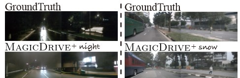
図9：MagicDrive の失敗例。（a）暗さが不十分。（b）未見の天候。
図中ラベル：GroundTruth＝正解（実画像）、MagicDrive+ night＝MagicDrive＋夜間、MagicDrive+ snow＝MagicDrive＋雪
謝辞。本研究は、香港研究資助局（Research Grants Council、RGC）の General Research Fund（GRF）（Grant No. 14203521）、CUHK SSFCRS funding No. 3136023、および Research Matching Grant Scheme（Grant No. 7106937、8601130、8601440）の支援を一部受けている。本研究で使用した MindSpore、CANN（Compute Architecture for Neural Networks）、および Ascend AI Processor の支援に深く感謝する。本研究は、香港研究資助局の Research Impact Fund プロジェクト R6003-21 による資金支援によって可能となった。
参考文献
参考文献は原文のまま掲載した。
- Tim Brooks, Aleksander Holynski, and Alexei A Efros. Instructpix2pix: Learning to follow image editing instructions. In CVPR, 2023.
- Holger Caesar, Varun Bankiti, Alex H Lang, Sourabh Vora, Venice Erin Liong, Qiang Xu, Anush Krishnan, Yu Pan, Giancarlo Baldan, and Oscar Beijbom. nuscenes: A multimodal dataset for autonomous driving. In CVPR, 2020.
- Kai Chen, Lanqing Hong, Hang Xu, Zhenguo Li, and Dit-Yan Yeung. Multisiam: Self-supervised multi-instance siamese representation learning for autonomous driving. In ICCV, 2021.
- Kai Chen, Zhili Liu, Lanqing Hong, Hang Xu, Zhenguo Li, and Dit-Yan Yeung. Mixed autoencoder for self-supervised visual representation learning. In CVPR, 2023a.
- Kai Chen, Chunwei Wang, Kuo Yang, Jianhua Han, Lanqing Hong, Fei Mi, Hang Xu, Zhengying Liu, Wenyong Huang, Zhenguo Li, Dit-Yan Yeung, Lifeng Shang, Xin Jiang, and Qun Liu. Gaining wisdom from setbacks: Aligning large language models via mistake analysis. arXiv preprint arXiv:2310.10477, 2023b.
- Kai Chen, Enze Xie, Zhe Chen, Lanqing Hong, Zhenguo Li, and Dit-Yan Yeung. Integrating geometric control into text-to-image diffusion models for high-quality detection data generation via text prompt. arXiv preprint arXiv:2306.04607, 2023c.
- Yaran Chen, Haoran Li, Ruiyuan Gao, and Dongbin Zhao. Boost 3-d object detection via point clouds segmentation and fused 3-d giou-l1 loss. IEEE TNNLS, 2020.
- Patrick Esser, Robin Rombach, and Bjorn Ommer. Taming transformers for high-resolution image synthesis. In CVPR, 2021.
- Ruiyuan Gao, Chenchen Zhao, Lanqing Hong, and Qiang Xu. DiffGuard: Semantic mismatch-guided out-of-distribution detection using pre-trained diffusion models. In ICCV, 2023.
- Chongjian Ge, Junsong Chen, Enze Xie, Zhongdao Wang, Lanqing Hong, Huchuan Lu, Zhenguo Li, and Ping Luo. MetaBEV: Solving sensor failures for bev detection and map segmentation. In ICCV, 2023.
- Yunhao Gou, Zhili Liu, Kai Chen, Lanqing Hong, Hang Xu, Aoxue Li, Dit-Yan Yeung, James T Kwok, and Yu Zhang. Mixture of cluster-conditional lora experts for vision-language instruction tuning. arXiv preprint arXiv:2312.12379, 2023.
- Nicholas Guttenberg. Diffusion with offset noise. https://www.crosslabs.org/blog/diffusion-with-offset-noise, 2023.
- Jianhua Han, Xiwen Liang, Hang Xu, Kai Chen, Lanqing Hong, Chaoqiang Ye, Wei Zhang, Zhenguo Li, Xiaodan Liang, and Chunjing Xu. Soda10m: Towards large-scale object detection benchmark for autonomous driving. arXiv preprint arXiv:2106.11118, 2021.
- Jonathan Ho and Tim Salimans. Classifier-free diffusion guidance. In NeurIPS 2021 Workshop on Deep Generative Models and Downstream Applications, 2021.
- Jonathan Ho, Ajay Jain, and Pieter Abbeel. Denoising diffusion probabilistic models. In NeurIPS, 2020.
- Junjie Huang, Guan Huang, Zheng Zhu, Ye Yun, and Dalong Du. Bevdet: High-performance multi-camera 3d object detection in bird-eye-view. arXiv preprint arXiv:2112.11790, 2021.
- Yuanfeng Ji, Zhe Chen, Enze Xie Xie, Lanqing Hong, Xihui Liu, Zhaoqiang Liu, Tong Lu, Zhenguo Li, and Ping Luo. DDP: Diffusion model for dense visual prediction. In ICCV, 2023.
- Kaican Li, Kai Chen, Haoyu Wang, Lanqing Hong, Chaoqiang Ye, Jianhua Han, Yukuai Chen, Wei Zhang, Chunjing Xu, Dit-Yan Yeung, et al. Coda: A real-world road corner case dataset for object detection in autonomous driving. arXiv preprint arXiv:2203.07724, 2022.
- Pengxiang Li, Zhili Liu, Kai Chen, Lanqing Hong, Yunzhi Zhuge, Dit-Yan Yeung, Huchuan Lu, and Xu Jia. Trackdiffusion: Multi-object tracking data generation via diffusion models. arXiv preprint arXiv:2312.00651, 2023a.
- Yuheng Li, Haotian Liu, Qingyang Wu, Fangzhou Mu, Jianwei Yang, Jianfeng Gao, Chunyuan Li, and Yong Jae Lee. Gligen: Open-set grounded text-to-image generation. In CVPR, 2023b.
- Tsung-Yi Lin, Michael Maire, Serge Belongie, James Hays, Pietro Perona, Deva Ramanan, Piotr Dollár, and C Lawrence Zitnick. Microsoft coco: Common objects in context. In ECCV, 2014.
- Nan Liu, Shuang Li, Yilun Du, Antonio Torralba, and Joshua B Tenenbaum. Compositional visual generation with composable diffusion models. In ECCV, 2022a.
- Ze Liu, Yutong Lin, Yue Cao, Han Hu, Yixuan Wei, Zheng Zhang, Stephen Lin, and Baining Guo. Swin transformer: Hierarchical vision transformer using shifted windows. In ICCV, 2021.
- Zhijian Liu, Haotian Tang, Alexander Amini, Xingyu Yang, Huizi Mao, Daniela Rus, and Song Han. Bevfusion: Multi-task multi-sensor fusion with unified bird's-eye view representation. In ICRA, 2023a.
- Zhili Liu, Jianhua Han, Kai Chen, Lanqing Hong, Hang Xu, Chunjing Xu, and Zhenguo Li. Task-customized self-supervised pre-training with scalable dynamic routing. In AAAI, 2022b.
- Zhili Liu, Kai Chen, Yifan Zhang, Jianhua Han, Lanqing Hong, Hang Xu, Zhenguo Li, Dit-Yan Yeung, and James Kwok. Geom-erasing: Geometry-driven removal of implicit concept in diffusion models. arXiv preprint arXiv:2310.05873, 2023b.
- Ilya Loshchilov and Frank Hutter. Decoupled weight decay regularization. In ICLR, 2019.
- Ben Mildenhall, Pratul P Srinivasan, Matthew Tancik, Jonathan T Barron, Ravi Ramamoorthi, and Ren Ng. Nerf: Representing scenes as neural radiance fields for view synthesis. In ECCV, 2020.
- Alexander Quinn Nichol, Prafulla Dhariwal, Aditya Ramesh, Pranav Shyam, Pamela Mishkin, Bob Mcgrew, Ilya Sutskever, and Mark Chen. Glide: Towards photorealistic image generation and editing with text-guided diffusion models. In ICML, 2022.
- Alec Radford, Jong Wook Kim, Chris Hallacy, Aditya Ramesh, Gabriel Goh, Sandhini Agarwal, Girish Sastry, Amanda Askell, Pamela Mishkin, Jack Clark, et al. Learning transferable visual models from natural language supervision. In ICML, 2021.
- Robin Rombach, Andreas Blattmann, Dominik Lorenz, Patrick Esser, and Björn Ommer. High-resolution image synthesis with latent diffusion models. In CVPR, 2022.
- Yang Song, Jascha Sohl-Dickstein, Diederik P Kingma, Abhishek Kumar, Stefano Ermon, and Ben Poole. Score-based generative modeling through stochastic differential equations. In ICLR, 2020.
- Alexander Swerdlow, Runsheng Xu, and Bolei Zhou. Street-view image generation from a bird's-eye view layout. arXiv preprint arXiv:2301.04634, 2023.
- Shitao Tang, Fuyang Zhang, Jiacheng Chen, Peng Wang, and Yasutaka Furukawa. Mvdiffusion: Enabling holistic multi-view image generation with correspondence-aware diffusion. arXiv preprint arXiv:2307.01097, 2023.
- Hung-Yu Tseng, Qinbo Li, Changil Kim, Suhib Alsisan, Jia-Bin Huang, and Johannes Kopf. Consistent view synthesis with pose-guided diffusion models. In CVPR, 2023.
- Ashish Vaswani, Noam Shazeer, Niki Parmar, Jakob Uszkoreit, Llion Jones, Aidan N Gomez, Łukasz Kaiser, and Illia Polosukhin. Attention is all you need. In NeurIPS, 2017.
- Su Wang, Chitwan Saharia, Ceslee Montgomery, Jordi Pont-Tuset, Shai Noy, Stefano Pellegrini, Yasumasa Onoe, Sarah Laszlo, David J Fleet, Radu Soricut, et al. Imagen editor and editbench: Advancing and evaluating text-guided image inpainting. In CVPR, 2023a.
- Weilun Wang, Jianmin Bao, Wengang Zhou, Dongdong Chen, Dong Chen, Lu Yuan, and Houqiang Li. Semantic image synthesis via diffusion models. arXiv preprint arXiv:2207.00050, 2022.
- Xiaofeng Wang, Zheng Zhu, Guan Huang, Xinze Chen, Jiagang Zhu, and Jiwen Lu. Drivedreamer: Towards real-world-driven world models for autonomous driving. arXiv preprint arXiv:2309.09777, 2023b.
- Xiaofeng Wang, Zheng Zhu, Yunpeng Zhang, Guan Huang, Yun Ye, Wenbo Xu, Ziwei Chen, and Xingang Wang. Are we ready for vision-centric driving streaming perception? the asap benchmark. In CVPR, 2023c.
- Jay Zhangjie Wu, Yixiao Ge, Xintao Wang, Stan Weixian Lei, Yuchao Gu, Yufei Shi, Wynne Hsu, Ying Shan, Xiaohu Qie, and Mike Zheng Shou. Tune-a-video: One-shot tuning of image diffusion models for text-to-video generation. In CVPR, 2023a.
- Weijia Wu, Yuzhong Zhao, Hao Chen, Yuchao Gu, Rui Zhao, Yefei He, Hong Zhou, Mike Zheng Shou, and Chunhua Shen. Datasetdm: Synthesizing data with perception annotations using diffusion models. arXiv preprint arXiv:2308.06160, 2023b.
- Kairui Yang, Enhui Ma, Jibin Peng, Qing Guo, Di Lin, and Kaicheng Yu. Bevcontrol: Accurately controlling street-view elements with multi-perspective consistency via bev sketch layout. arXiv preprint arXiv:2308.01661, 2023a.
- Yijun Yang, Ruiyuan Gao, Xiaosen Wang, Nan Xu, and Qiang Xu. Mma-diffusion: Multimodal attack on diffusion models. arXiv preprint arXiv:2311.17516, 2023b.
- Lvmin Zhang, Anyi Rao, and Maneesh Agrawala. Adding conditional control to text-to-image diffusion models. In ICCV, 2023a.
- Shu Zhang, Xinyi Yang, Yihao Feng, Can Qin, Chia-Chih Chen, Ning Yu, Zeyuan Chen, Huan Wang, Silvio Savarese, Stefano Ermon, et al. Hive: Harnessing human feedback for instructional visual editing. arXiv preprint arXiv:2303.09618, 2023b.
- Wenliang Zhao, Lujia Bai, Yongming Rao, Jie Zhou, and Jiwen Lu. Unipc: A unified predictor-corrector framework for fast sampling of diffusion models. arXiv preprint arXiv:2302.04867, 2023.
- Ziyang Zheng, Ruiyuan Gao, and Qiang Xu. Non-cross diffusion for semantic consistency. arXiv preprint arXiv:2312.00820, 2023.
- LIU Zhili, Kai Chen, Jianhua Han, HONG Lanqing, Hang Xu, Zhenguo Li, and James Kwok. Task-customized masked autoencoder via mixture of cluster-conditional experts. In ICLR, 2023.
- Bolei Zhou, Hang Zhao, Xavier Puig, Tete Xiao, Sanja Fidler, Adela Barriuso, and Antonio Torralba. Semantic understanding of scenes through the ade20k dataset. In IJCV, 2019.
- Brady Zhou and Philipp Krähenbühl. Cross-view transformers for real-time map-view semantic segmentation. In CVPR, 2022.
付録
A 物体のフィルタリング
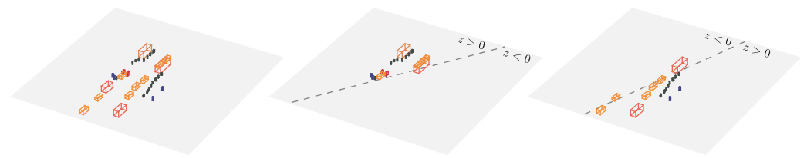
図10：各ビューに対するバウンディングボックスのフィルタリング。（b–c）の破線はカメラ座標系の \( x \) 軸を表す。ボックスは、各カメラの座標系において \( z \) 軸の正の側に少なくとも 1 点を持つ場合にのみ保持される。（a）すべての物体ボックス。（b）左前方ビューで可視のボックス。（c）右後方ビューで可視のボックス。
式6では、ブートストラップ学習を容易にするため、物体のフィルタリングに \( f_{viz} \) を用いる。ここで \( f_{viz} \) の詳細を示す。図解は図10を参照されたい。単純化のため、各カメラの視野（Field Of View、FOV）は考慮しない。物体は、そのバウンディングボックスのいずれかの角が各カメラの座標系においてカメラの前方（すなわち \( z^{v_i} \gt 0 \)）に位置する場合に可視と定義する。\( f_{viz} \) の適用はバウンディングボックスエンコーダの負荷を大幅に軽減し、その根拠は 6 節に示されている。
B 実験のさらなる詳細
生成のためのセマンティッククラス。nuScenes 上のほとんどの知覚モデルに対応するため、ほとんどの設定で一般的に用いられる意味クラスを含めるようにしている（Huang et al., 2021; Zhou & Krähenbühl, 2022; Liu et al., 2023a; Ge et al., 2023）。具体的には、物体については、乗用車（car）、バス（bus）、トラック（truck）、トレーラー（trailer）、オートバイ（motorcycle）、自転車（bicycle）、工事車両（construction vehicle）、歩行者（pedestrian）、バリア（barrier）、トラフィックコーン（traffic cone）の 10 カテゴリを含む。道路地図については、走行可能領域（drivable area）、横断歩道（pedestrian crossing）、歩道（walkway）、停止線（stop line）、駐車場（car parking area）、道路分離帯（road divider）、車線区分線（lane divider）、通行止め（roadblock）の 8 カテゴリを含む。
最適化。新たに追加したすべてのパラメータを、AdamW（Loshchilov & Hutter, 2019）オプティマイザ、一定の学習率 \( 8e^{-5} \)、バッチサイズ 24（6 ビューで計 144 枚の画像）、3000 イテレーションの線形ウォームアップで学習し、\( \gamma^s = 0.2 \) とする。
C 注意を向けるビュー数に関するアブレーション
| 注意対象ビュー数（Attending Num.） | FID ↓ | Road mIoU ↑ | Vehicle mIoU ↑ |
|---|---|---|---|
| 1 | 13.06 | 58.63 | 26.41 |
| 2（本手法） | 14.46 | 59.31 | 27.13 |
| 5（全ビュー） | 14.76 | 58.35 | 25.41 |
表5：注意を向けるビュー数に関するアブレーション。評価結果は、合成した nuScenes 検証セットに対する CVT によるもので、CFG スケール = 2 において \( M = \{0\} \) を用いない場合である。
表5では、注意を向けるビュー数を変えたときの評価結果への影響を示す。単一のビューに注意を向けると FID の結果が優れる。隣接ビューから流入する情報が減ることで、そのビューの最適化が単純になるためである。しかし、このアプローチは mIoU を損ない、図11に示すように一貫性の低い生成も反映している。逆に、すべてのビューを取り込むと、すべての指標で性能が悪化する。これは、過剰な情報がクロス注意において干渉を引き起こすためと考えられる。各ビューは左右両方のビューと重なりを持つため、1 つのビューに注意を向けるだけでは特に前景物体について一貫性を保証できず、一方でより多くのビューに注意を向けるにはより多くの計算が必要となる。そこで本論文の本編では、一貫性と計算効率のバランスをとって、注意対象のビューを 2 つとしている。
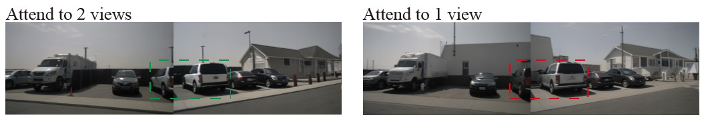
図11：注意を向けるビュー数の違いによる比較。1 つのビューのみに注意を向けると、マルチカメラの一貫性が悪化する。
図中ラベル：Attend to 2 views＝2 つのビューに注意、Attend to 1 view＝1 つのビューに注意
D BEVGen との定性的比較
図12は、MagicDrive が BEVGen（Swerdlow et al., 2023）と比べてより高品質な画像を生成し、特に物体において優れていることを示している。この向上は、MagicDrive が拡散モデルを利用していることと、独自に設計した条件注入戦略を採用していることに起因すると考えられる。
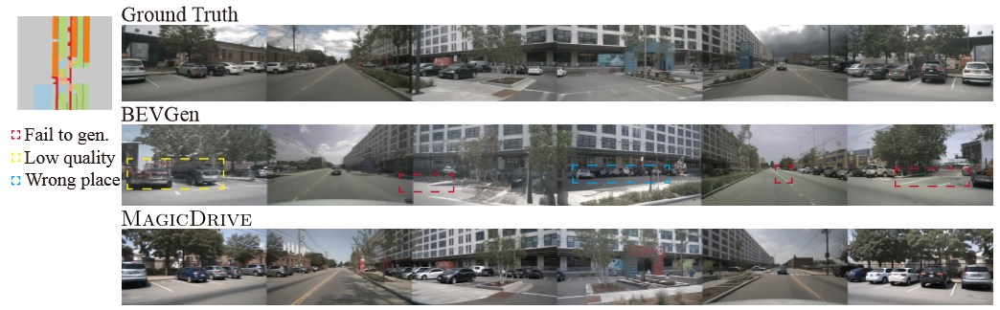
図12：nuScenes 検証セットの走行シーンにおける BEVGen との定性的比較。比較を容易にするため、いくつかの領域を矩形で強調している。BEVGen と比べて、MagicDrive による物体の画像品質ははるかに優れている。
図中ラベル：Ground Truth＝正解（実画像）、Fail to gen.＝生成失敗、Low quality＝低品質、Wrong place＝誤った位置
E 異なる条件による制御のさらなる結果
図13は、シーンレベルの制御（時間帯）と背景レベルの制御（BEV 地図の変更）を示している。MagicDrive は、生成したカメラビューを通じて、これらの制御条件の変化を効果的に反映できる。
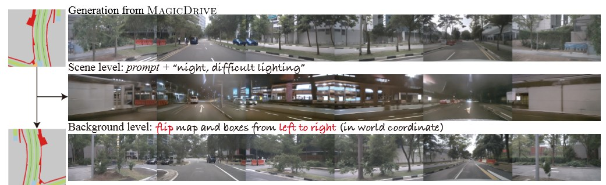
図13：MagicDrive によるシーンレベル制御の事例。シーンは nuScenes 検証セットのものである。
図中ラベル：Generation from MagicDrive＝MagicDrive による生成、Scene level: prompt + "night, difficult lighting"＝シーンレベル：プロンプト＋「夜間、困難な照明条件」、Background level: flip map and boxes from left to right (in world coordinate)＝背景レベル：地図とボックスを左右反転（ワールド座標系で）
F 3D 物体検出に関する追加実験
| エポック | データ | カメラのみ（CAM-Only） | カメラ＋LiDAR（CAM+LiDAR） | ||
|---|---|---|---|---|---|
| mAP ↑ | NDS ↑ | mAP ↑ | NDS ↑ | ||
| 0.5× | 合成データなし（w/o synthetic data） | 30.21 | 32.76 | エポック数が少なすぎる（too few epochs） | エポック数が少なすぎる（too few epochs） |
| MagicDrive あり（w/ MagicDrive） | 33.29 (+3.08) | 36.69 (+3.93) | |||
| 1× | 合成データなし（w/o synthetic data） | 32.88 | 37.81 | 65.40 | 69.59 |
| MagicDrive あり（w/ MagicDrive） | 35.40 (+2.52) | 39.76 (+1.95) | 67.86 (+2.46) | 70.72 (+1.13) | |
| 2× | 合成データなし（w/o synthetic data） | 35.49 | 40.66 | 68.33 | 71.31 |
| MagicDrive あり（w/ MagicDrive） | 35.74 (+0.25) | 41.40 (+0.74) | 68.58 (+0.25) | 71.34 (+0.03) | |
表6：3D 物体検出モデル（すなわち BEVFusion）の支援に関する比較。MagicDrive は拡張用に 272×736 の画像を生成する。結果は nuScenes 検証セットでのテストによる。
表6では、MagicDrive が生成した合成データを用いて 3D 物体検出モデルを学習した追加の実験結果を示す。BEVFusion は軽量なバックボーン（すなわち Swin-T（Liu et al., 2021））を用いているため、モデルの性能は 1〜2× エポック（2×：カメラのみで 20、カメラ＋LiDAR で 6）の学習で頭打ちになるとみられる。エポック数を減らすとこの飽和を緩和でき、より多様なデータによって両設定でモデルの知覚能力を高められる。この改善は、3D 物体検出のエポック数をさらに 0.5× に減らした場合にも明らかである。MagicDrive は、アノテーションに従って街路画像を正確に拡張する。今後の研究では、合成データ拡張のためのアノテーションのサンプリングと構築の戦略に焦点を当てることが考えられる。
G さらなる議論
さらなる今後の課題。MagicDrive が生成した街路画像は、現時点では実データとともに学習するための拡張サンプルとしてしか機能しない点に注意されたい。生成データのみで検出器を学習することは興味深く、今後探求する予定である。データ拡張を超えた生成街路画像のより柔軟な利用、特に生成的事前学習（Chen et al., 2023a; Zhili et al., 2023）、対照学習（Chen et al., 2021; Liu et al., 2022b）、大規模言語モデル（LLM）（Chen et al., 2023b; Gou et al., 2023）との組み合わせは、魅力的な今後の研究方向である。また、3D シナリオ以外のさまざまな状況（例えば複数物体追跡（Li et al., 2023a）や概念の除去（Liu et al., 2023b））で幾何制御を活用することも興味深い。
H 合成データを用いた 3D 物体検出の詳細分析
| データ | mAP | car | cone | barrier | bus | ped. | motor. | truck | bicycle | trailer | constr. |
|---|---|---|---|---|---|---|---|---|---|---|---|
| BEVFusion | 32.88 | 50.67 | 50.46 | 48.62 | 37.73 | 35.74 | 30.40 | 27.54 | 24.85 | 15.56 | 7.28 |
| + MagicDrive | 35.40 | 51.86 | 53.56 | 51.15 | 40.43 | 38.10 | 33.11 | 29.35 | 27.85 | 18.74 | 9.83 |
| 差分（Difference） | +2.52 | +1.20 | +3.10 | +2.53 | +2.70 | +2.36 | +2.71 | +1.81 | +3.00 | +3.19 | +2.55 |
表7：1× 設定の 3D 物体検出における BEVFusion とのクラス別性能比較。結果は nuScenes 検証セットでテストしたものである。（列見出し：car＝乗用車、cone＝トラフィックコーン、barrier＝バリア、bus＝バス、ped.＝歩行者、motor.＝オートバイ、truck＝トラック、bicycle＝自転車、trailer＝トレーラー、constr.＝工事車両）
表7に、BEVFusion を用いた nuScenes 検証セットにおける 3D 物体検出のクラス別 AP を示す。結果から次のことが観察される。第一に、バス、トレーラー、工事車両など、大きな物体での改善が顕著である。第二に、トラフィックコーンやバリアのように外観の多様性が低い物体では、特にトラックと比べてより大きな改善が見られる。第三に、乗用車での改善はわずかである一方、歩行者、オートバイ、自転車では顕著である。これは、ベースラインがすでに乗用車で良好な性能を示しているためと考えられる。歩行者、オートバイ、自転車については、自車から遠い物体の生成の忠実度は低いものの、図17–18に示すように、MagicDrive は自車の近くの物体を高品質に合成できる。したがって、自車近くの物体をより正確に検出できることが、これらのクラスの改善に寄与している。全体として、mAP の改善はすべてのクラスの AP の向上を伴っており、MagicDrive が実際に知覚モデルの学習に役立つことを示している。
I BEV セグメンテーションに関するさらなる結果
BEVFusion は BEV セグメンテーションも可能であり、BEV 地図条件で用いたクラスのほとんどを考慮している。ベースラインが存在しないため、今後の研究での比較を容易にする目的で表8に結果を示す。見てわかるように、272×736 の解像度は 224×400 の解像度を上回らない。これは、表1の CVT による道路（Road）セグメントの結果と一致する。このような結果は、より良い地図制御のためには、生成の学習において元のアスペクト比を維持すること（すなわち各辺の切り取りを避けること）が重要であることを裏付けている。
| 手法 | 解像度 | 6 クラスの mIOU | |
|---|---|---|---|
| CAM-only | CAM+LiDAR | ||
| Oracle | - | 57.09 | 62.94 |
| Oracle | 224×400 | 52.72 | 58.49 |
| MagicDrive | 224×400 | 30.24 | 48.21 |
| MagicDrive | 272×736 | 28.71 | 47.12 |
表8：BEV 地図条件に対する生成の忠実度。結果は、nuScenes 検証セットにおいて BEVFusion による BEV セグメンテーションでテストしたものである。
J カメラパラメータの汎化
汎化能力を高めるため、MagicDrive は異なる視点に対して生のカメラ内部パラメータと外部パラメータを符号化する。しかし、nuScenes では異なるシーン間でカメラ姿勢が固定されているため、汎化能力はある程度限られる。それでも、前方の 3 台のカメラと後方の 3 台のカメラの間で内部パラメータと外部パラメータを交換することを試みた。比較を図14に示す。nuScenes のカメラの配置は前後で対称ではなく、また後方カメラの FOV は 120° であるのに対し他のカメラは 70° であるため、同じ 3D 座標に対して前方ビューと後方ビューで明らかな違いが観察できる。
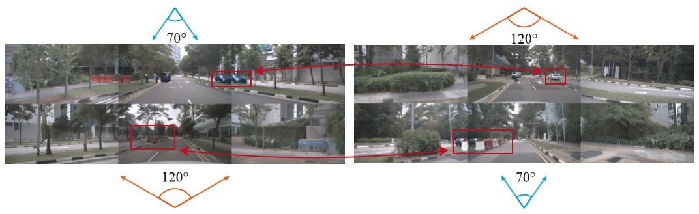
図14：学習したカメラ符号化の汎化能力を示すため、前方の 3 台のカメラと後方の 3 台のカメラの間でカメラパラメータを交換する。3D 位置は 2 つの生成で同一である。いくつかの領域を（枠で）強調している。（訳注：原文のキャプションは "(with box boxes)" で終わっており、文が不完全かつ語の重複がある。）
K さらなる生成結果
図15にいくつかのコーナーケース（Li et al., 2022）の生成結果を、図16〜図18にさらなる生成結果を示す。
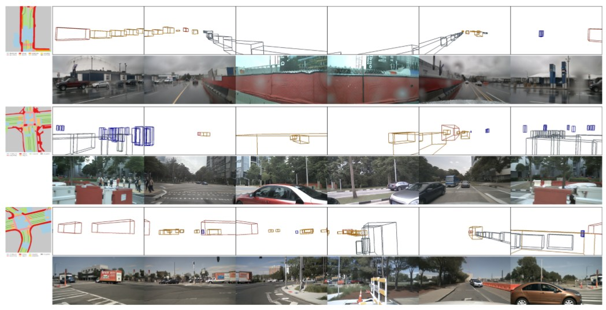
図15：コーナーケースのアノテーションを用いた MagicDrive による生成。
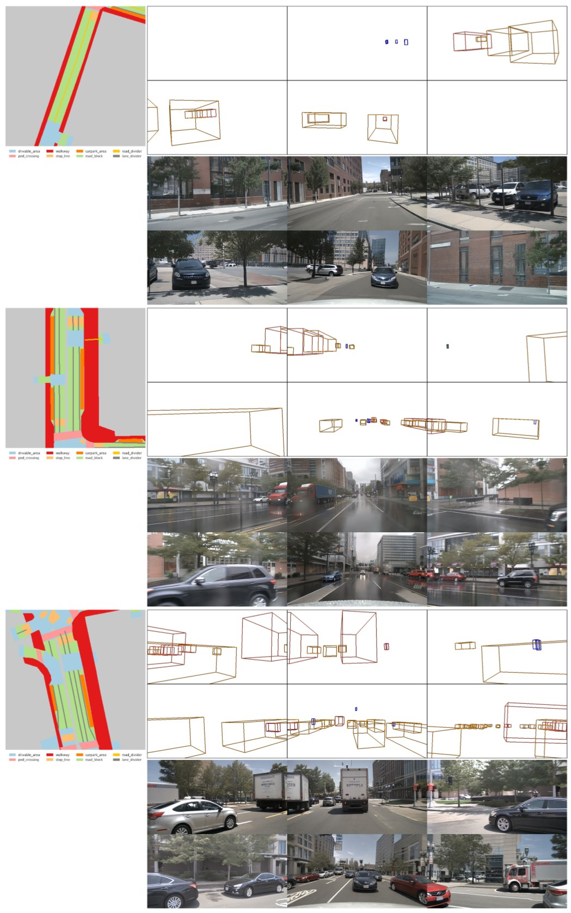
図16：nuScenes 検証セットのアノテーションを用いた MagicDrive による生成。
図中ラベル（BEV 地図の凡例）：drivable_area＝走行可能領域、ped_crossing＝横断歩道、walkway＝歩道、stop_line＝停止線、carpark_area＝駐車場、road_block＝通行止め、road_divider＝道路分離帯、lane_divider＝車線区分線
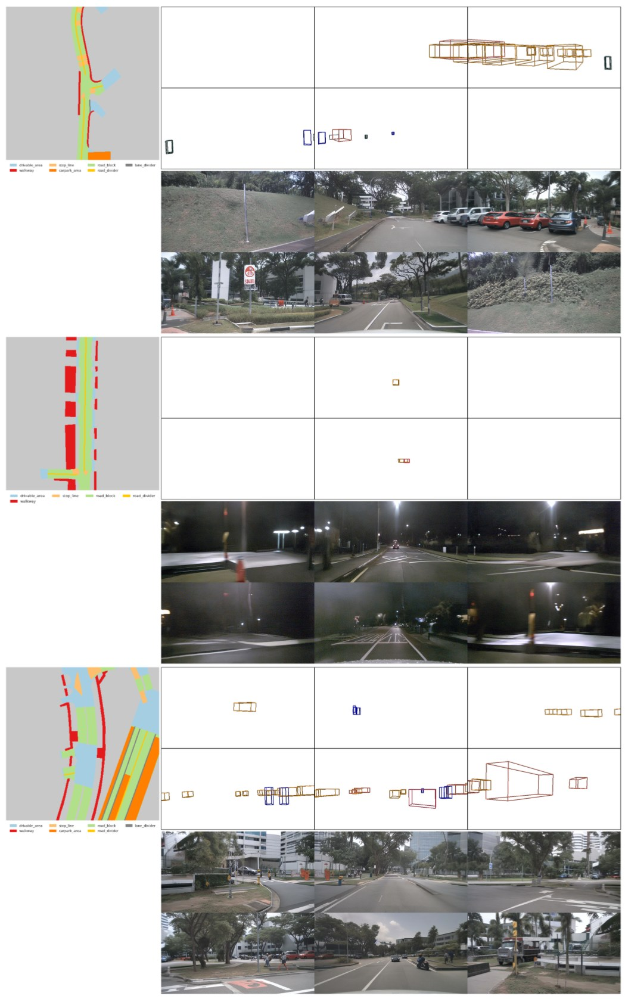
図17：nuScenes 検証セットのアノテーションを用いた MagicDrive による生成。
図中ラベル（BEV 地図の凡例）：図16と同じ。
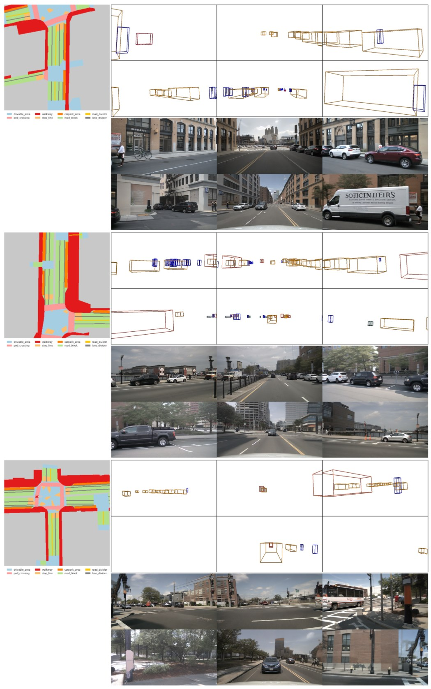
図18：nuScenes 検証セットのアノテーションを用いた MagicDrive による生成。
図中ラベル（BEV 地図の凡例）：図16と同じ。